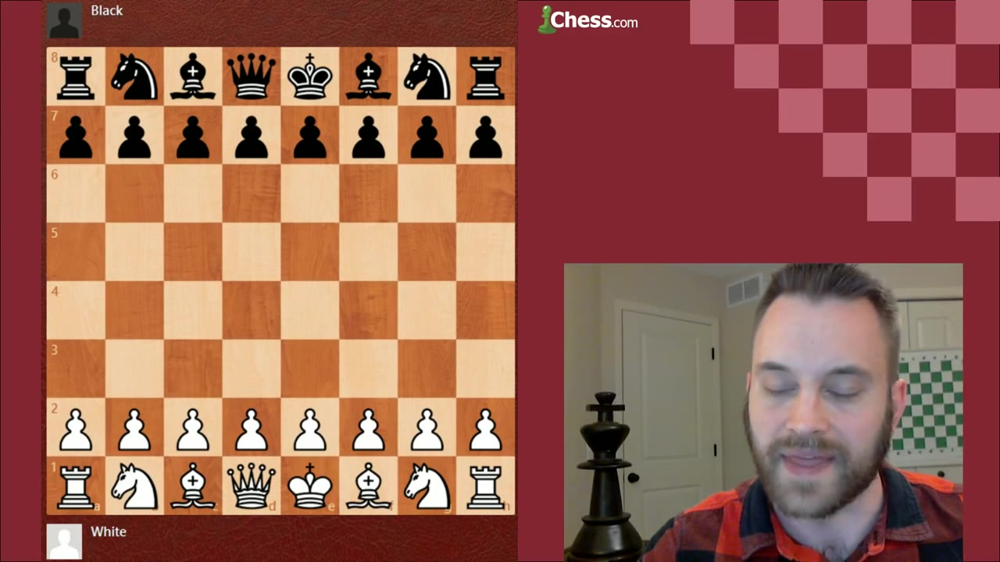
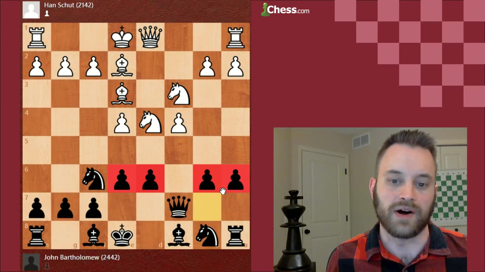
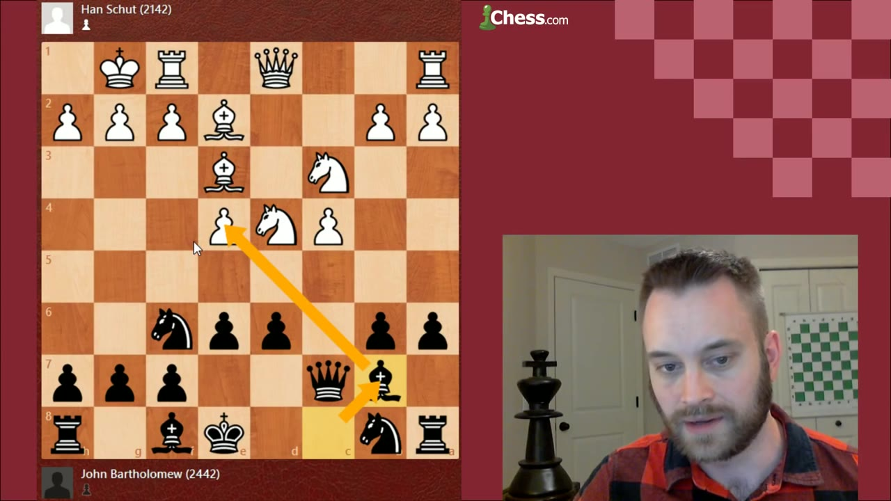
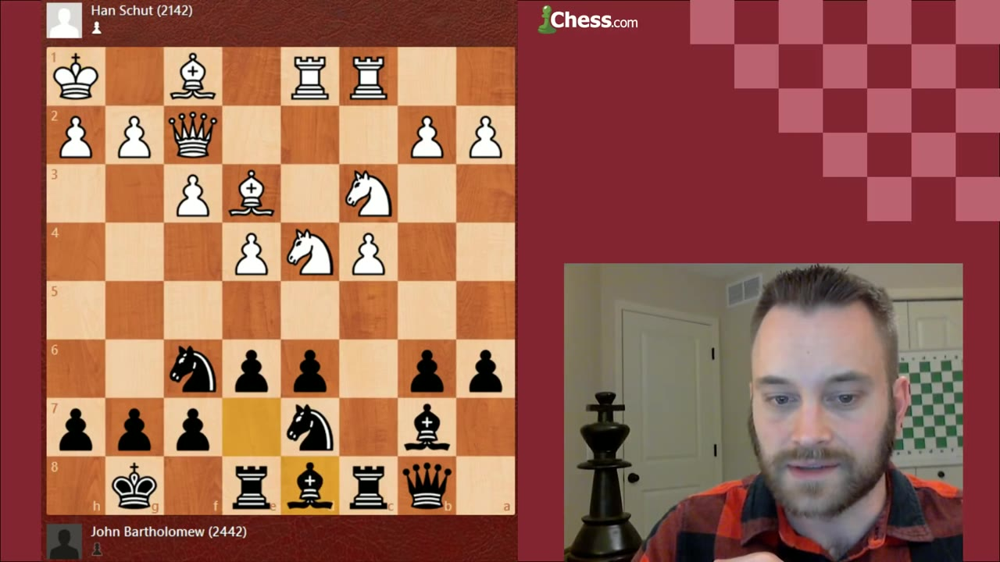
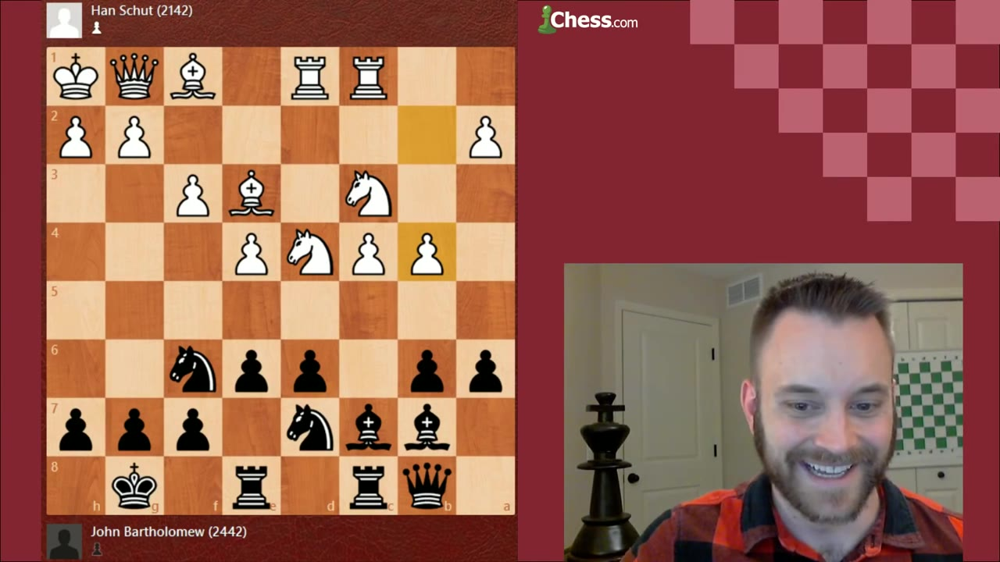
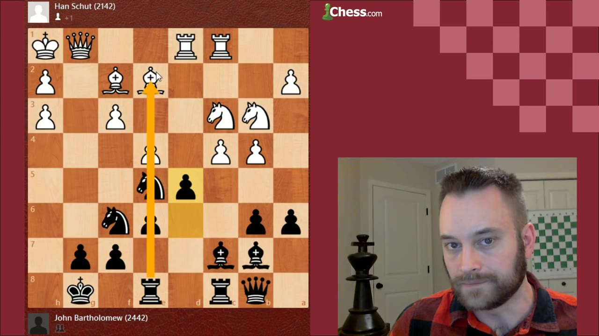
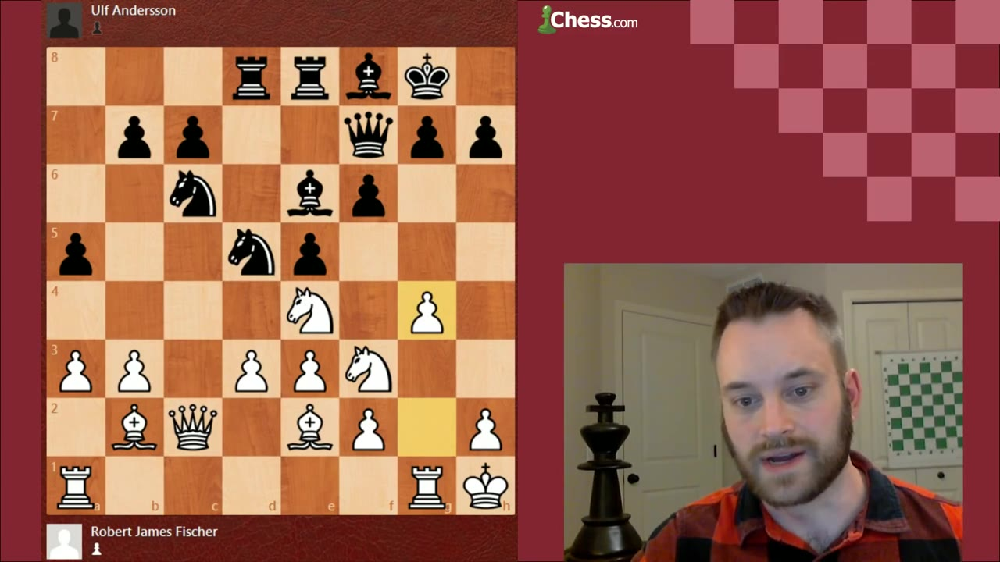
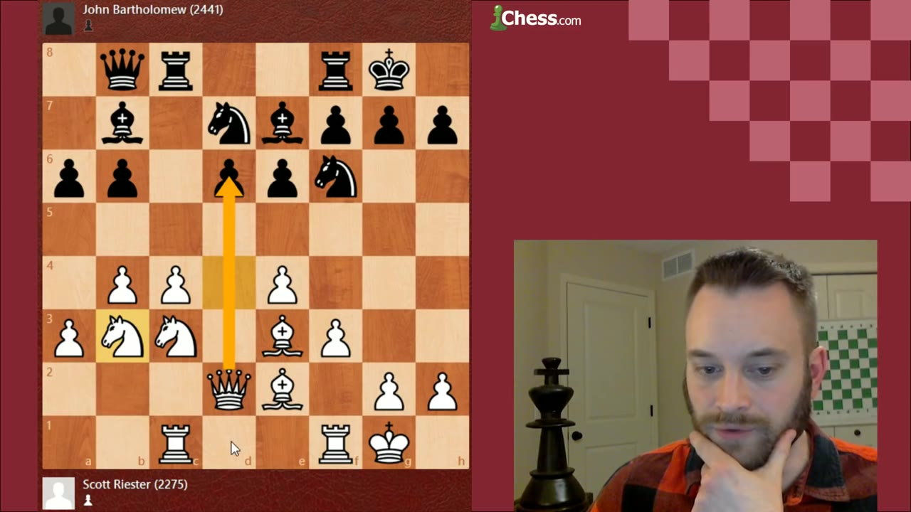
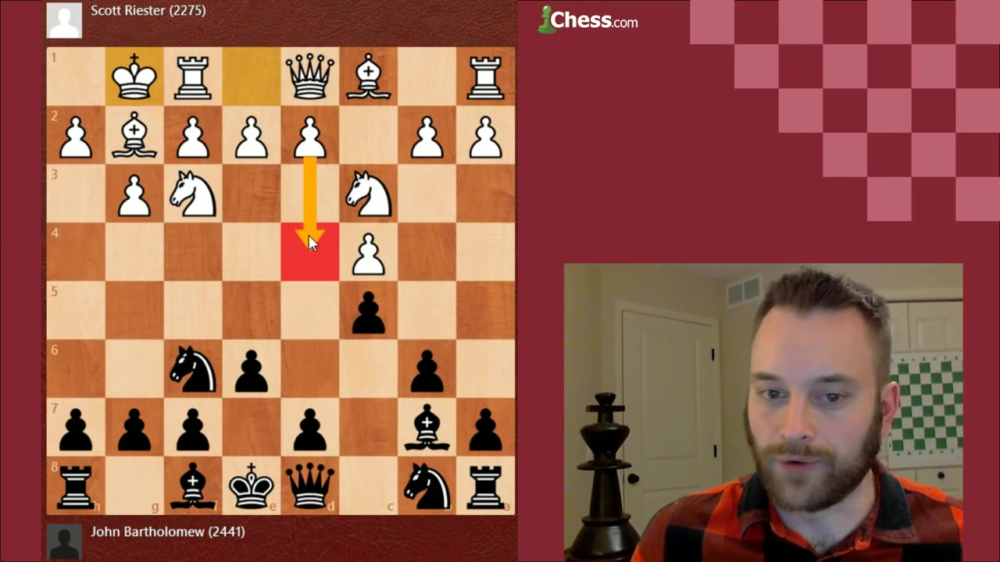

IM John Bartholomew teaches the Hedgehog — not the animal, the chess setup. Three games walk through what the structure is, the maneuvers that give it teeth, and how it loses when White plays the right antidote.
Watch on YouTubeA teaching stream, three games, one structure played from both colors. Bartholomew has more experience on the Black side, so that is where the lesson lives. He is careful with the label: the Hedgehog is not a concrete opening you can force, it is a setup your opponent has to let you reach. The most reliable road in is a Sicilian against e4 — and when his Manhattan Open opponent answered the Sicilian with c4 instead of d4, he already knew the Hedgehog was coming.

The name does the explaining. Pawns on e6, d6, b6, and a6 sit like quills, controlling every square on the fifth rank and keeping the enemy knights out of the squares they want — c5, d5, b5. That is the minimum, and every pawn is load-bearing: move one out of place and White gets a permanent square. The animal looks purely defensive, but the structure stores energy, and many players have been burned overextending against it.

Even though the Hedgehog looks purely defensive at the moment, it does contain a lot of kinetic energy.— John Bartholomew
The pawns are an investment; the pieces are where the play is. The knight goes to d7, not c6 — on c6 it blocks the bishop and invites trouble down the c-file. The light-squared bishop is best fianchettoed on b7, eyeing e4 and the long diagonal. One rook comes to c8 where the action usually is; the other goes to e8 — a strange-looking square while the file is closed, but the right one for when d5 finally opens it. And the queen retreats to b8, off the c-file so a future d5 or b5 break doesn't run into White's rook.

keeps the bishop's diagonal clear; supports f6.
fianchettoed, hitting e4 and the long diagonal.
c8 for the action, e8 ready for the d5 break.
tucked off the c-file before any pawn break.
Once the queen is on b8 and there's no White pressure on d6, the dark-squared bishop reroutes: Bd8, then Bc7. Named for Fritz Samisch, who first showed the point — even blocked in by its own pawns, the bishop now leans on the long diagonal toward h2, adding real weight to an eventual d5. The chat guessed Qa8 instead; Bartholomew explains why it's rarely played — the c7-h2 diagonal is the more promising one once the position opens, and Qa8 loses sight of the d-pawn.

Then a move that seems to come out of left field: h5, with the idea of running the pawn all the way to h3. Since White doesn't want to touch the kingside pawns — every pawn move there opens his king — Black can throw the h-pawn down the board to pry open the diagonal and weaken f3 and g2. It loosens Black's own king slightly, but the dynamics favor the side doing the attacking.

Already this little bishop maneuver, the Samisch maneuver, snaking over here, and suddenly an h-pawn push that comes out of nowhere.— John Bartholomew
d5 is the principal Hedgehog break, and the lesson's headline point: you don't play it to trade everything off, you play it to unleash the pieces — often sacrificing a pawn for the initiative. In game one Bartholomew goes down two, then three pawns after the bishop grabs b6, and gets one-way traffic in return: doubled isolated h-pawns for White, a loose king, and a queen-and-bishop battery aimed at h2. He keeps choosing the attacking move over winning material back — Nxd5, Be3 as an interference shot — until a quiet Rd8 ends it.

Game two: Fischer plays the Hedgehog with White against Ulf Andersson, Siegen Olympiad 1970. The teaching point is Andersson's structure — he plays an early d5 and ends up without a pawn on c5, which Bartholomew flags as the difference that quietly hurts Black, costing the queenside counterplay the Hedgehog needs. Then Fischer shows his signature plan: Kh1, Rg1, g4, doubling rooks on the g-file and marching the kingside pawns at the enemy king. Andersson's position looks logical and the engine even calls it level — but it has no plan, and Fischer makes it look easy.

The Hedgehog is such a flexible setup, I sometimes feel like playing against it you lack a clear direction.— John Bartholomew
The game he lost — Black against Scott Riester, Minnesota Closed Championship, 2013 — is the most instructive. Riester knew the setup and met it correctly: Nb3, a quiet multipurpose move that eyes d6, frees the bishop to pester b6, and above all supports a4-a5, a queenside pawn storm that arrives faster than Black's kingside ideas. With the knight off c3, the Samisch maneuver loses its sting — Bf4 hits d6 and forces awkward defense. Bartholomew ends up with a rook on c6 and no plan, and once White's a5 break lands and c5 follows, the structure collapses. He resigns down a rook.

The closing advice cuts both ways. If you're fighting the Hedgehog, don't trade your d-pawn for the c-pawn — that's the door Black walks through. And keep your pawn on c4: it gives you the queenside play Andersson lacked. If you want to reach a Hedgehog as Black, you can't force it, but the symmetrical English is a fertile source — a fianchetto setup, then White's d4 break trades the c- and d-pawns and Black sets up the spines right away.
